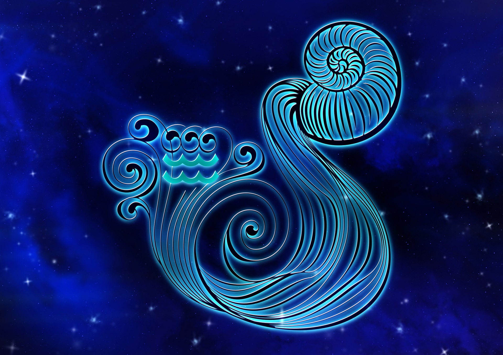

물병자리

물병자리(라틴어: Aquarius 아콰리우스[*])는 염소자리와 물고기자리 사이에 놓여 있는 별자리이며, 황도 12궁의 12번째에 해당 된다.
신화이야기
물병자리는 그리스 신화에서 가니메데가 들고 있는 물병이라는 것이 일반적이다. 제우스는 아름다운 소년 가니메데를 보고 사랑에 빠져, 독수리(이 독수리가 독수리자리가 되었다)로 변신한 뒤 가니메데를 올림포스 산으로 데리고 가 신들에게 포도주를 따르는 일을 시켰다고 한다. 물병자리의 '물병'으로부터 흘러나온 물은 그대로 에리다누스강으로 흘러간다. 이 물은 그리스 신화 속의 대홍수를 일으켰다고 여겨지기도 한다. (이 '물의 흐름'은 은하수와는 다르다.)